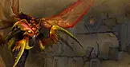

The Scarab Wall splits. Two ancient citadels of the Qiraji empire stand open — the Ruins for swift strike teams, the Temple for the deepest delves. C'Thun's gaze reaches from the void.
Kurinnaxx, Moam, and General Rajaxx lead the first wave. Shorter lockouts make this an ideal farm for resist gear and tier tokens while your main raid prepares for the Temple.

The Twin Emperors, Ouro, and the infamous eye of C'Thun await. Positioning, nature resistance, and nerves of steel separate victors from wipes. This is Classic's ultimate coordination check.
Your will shall be tested. Do not look away.